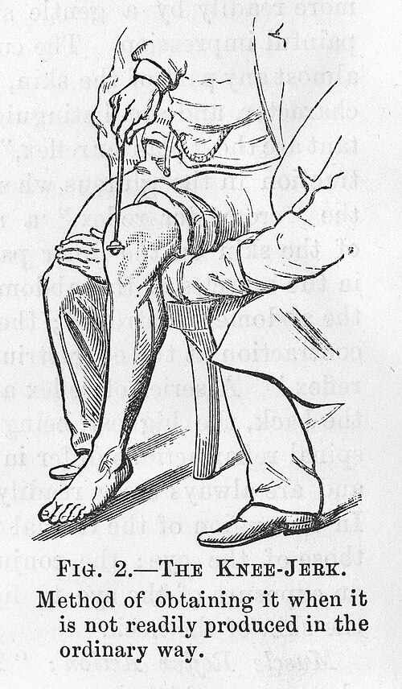
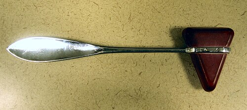
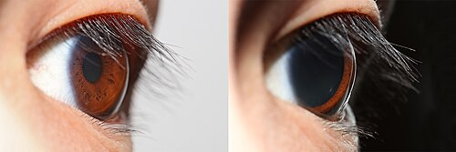

מודל המוח: Anderson M. Winkler, Brain for Blender
(מבוסס FreeSurfer), ברישיון CC BY-SA 3.0. החלקים אוחדו לאונות והוקטנו לתצוגה ברשת. האיצטרובל אינו חלק מהסריקה ונוסף כצורה מקורבת.
טוען את המוח…
3D · FreeSurferגרירה לסיבוב · גלילה או צביטה לזום · לחיצה על מבנה לפרטים
מערכת העצבים · רפלקסים
רפלקסים: כשהגוף מגיב לבד
לוחצים, מאירים, מקישים, ורואים איך הגוף עונה לפני שהספקתם לחשוב.
מה זה רפלקס?
רפלקס הוא תגובה אוטומטית של הגוף לגירוי. הוא קורה בלי שמחליטים עליו, הוא מהיר מאוד, והוא נראה כמעט אותו דבר בכל פעם.
⚡ מהיר🤖 אוטומטי, בלי החלטה🔁 קבוע, אותה תגובה כל פעם🛡️ בדרך כלל מגן עלינו
הסוד של המהירות הוא קשת הרפלקס: מסלול קצר שבו הסיגנל לא צריך לעלות עד המוח כדי שתהיה תגובה. ברוב הרפלקסים הוא "מסתובב" כבר בחוט השדרה.
קולטן חש←עצב תחושה←חוט השדרה←עצב תנועה←שריר זז
רפלקס נסיגה אצל בעל חיים שדרך על סיכה. החצים מראים את כיוון ההודעה: מהכף לחוט השדרה, דרך תא עצב מקשר, וחזרה לשריר שמרים את הרגל. Ruth Lawson, Otago Polytechnic, ויקישיתוף, CC BY 3.0. התוויות תורגמו לעברית.
נסו: לחצו על "געו בכיריים" וצפו בהילוך איטי. היד כבר בורחת לפני שהמוח בכלל יודע שכואב. ה"אאוץ'!" מגיע אחר כך.
כשאתם לוחצים על כפתור כי ראיתם צבע, זה לא רפלקס. זאת תגובה רצונית: העין שולחת תמונה למוח, המוח מזהה, מחליט ושולח פקודה לאצבע. זה לוקח הרבה יותר זמן.
לחצו על הלוח כשהוא נהיה ירוק (או מקש רווח). 5 ניסיונות, ונשווה את הממוצע שלכם לרפלקסים.
לחצו כדי להתחילחכו לירוק, ואז מהר!
ניסיונות: –
כמה זמן לוקח? (אלפיות שנייה)
📏 בלי מחשב: מבחן הסרגל
חבר מחזיק סרגל אנכי, ואתם מחזיקים אצבעות פתוחות סביב ה־0, בלי לגעת. החבר משחרר בלי להזהיר, ואתם תופסים. כמה סנטימטרים הסרגל נפל?
החישוב: גוף נופל עובר d = ½·g·t², אז t = √(2d/g).
רפלקס הברך Patellar reflex
מכה קטנה בגיד שמתחת לפיקת הברך מותחת לרגע את שריר הירך הקדמי. השריר "חושב" שהוא נמתח מדי, ומתכווץ מיד. הרגל בועטת קדימה.
זה הרפלקס הכי פשוט שיש: רק שני תאי עצב, תחושה ותנועה, עם חיבור אחד בחוט השדרה.
המסלול המלא: הפטיש מותח את השריר, חיישן המתיחה שולח הודעה בעצב התחושה (אדום) לחוט השדרה, ושם היא עוברת ישר לעצב התנועה (כחול) שמכווץ את השריר. Юкатан, ויקישיתוף, CC BY-SA 3.0. התוויות תורגמו לעברית.
איך בודקים?
הנבדק יושב על קצה שולחן או כיסא גבוה. הרגליים תלויות חופשי ולא נוגעות ברצפה.
ממששים את הגיד הרך שמתחת לפיקת הברך.
מקישים מכה קצרה וחדה עם פטיש רפלקסים. הפטיש מתנדנד מפרק כף היד, כמו מטוטלת.
מסתכלים על הבעיטה וממששים את שריר הירך מתכווץ. משווים בין שתי הרגליים.
מה התוצאות אומרות?
0
אין תגובה בכלל
1+
חלשה. לפעמים מופיעה רק עם "תרגיל ינדרשיק"
2+
תקינה, בעיטה קטנה-בינונית
3+
ערה מהרגיל, בעיטה חזקה
4+
ערה מאוד, עם קלונוס: הרגל רועדת שוב ושוב
למה המוח חשוב פה? המוח לא מפעיל את הרפלקס, אבל כל הזמן מרסן אותו. רפלקס חלש או חסר מרמז על בעיה בעצב או בשריר ("הקשת נקטעה"). רפלקס חזק מדי מרמז שה"בלמים" מהמוח לא מגיעים, למשל אחרי שבץ או פגיעה בחוט השדרה.
בדיקה מעמיקה: להתנגד ולעקוף את ההתנגדות
נסו להתנגד: אפשר "לעזור" לרפלקס להיעלם: לכווץ את הרגל, להסתכל על הברך ולחכות למכה. הבעיטה קטנה יותר, אבל כמעט אי אפשר לבטל אותה לגמרי. גם לחץ ולחוץ "חוסמים" אותה.
תרגיל ינדרשיק (Jendrassik): הנבדק משלב את האצבעות של שתי הידיים כמו שני ווים, ובדיוק ברגע המכה מושך חזק לצדדים. הקשב הולך לידיים, הנבדק מפסיק "לשמור" על הרגל, וכל מערכת התנועה נדרכת, אז הרפלקס מתחזק. רופאים משתמשים בתרגיל כשהרפלקס נראה חלש, כדי לבדוק אם הוא באמת חסר. אפשר גם לחרוק שיניים או לקמץ אגרוף.

מספר רפואי מסוף המאה ה־19: "איך לקבל את רפלקס הברך כשהוא לא מופיע בדרך הרגילה". Wellcome Collection, CC BY 4.0

פטיש רפלקסים קלאסי: ראש גומי משולש וידית מתכת. הקצה של הידית משמש לבדיקת בבינסקי. Samir, ויקישיתוף, CC BY-SA 3.0
המטופל:
המטופל מתנגד:
מה הדרגה?
קחו את הפטיש והקישו על הגיד שמתחת לפיקת הברך (העיגול המהבהב).
התנסות בכיתה: רפלקס הברך בזוגות
עובדים בזוגות: נבדק ובודק. אין פטיש? אפשר להקיש בעדינות עם צד כף היד (כמו "מכת קראטה" קטנה) או עם סרגל פלסטיק.
הכנה: הנבדק יושב על שולחן. הרגליים תלויות באוויר ורפויות.
מוצאים את המקום: ממששים מתחת לפיקת הברך. יש שם "חבל" רך: זה הגיד.
ניסוי א׳, רגיל: הנבדק מסתכל הצידה ומדבר עם מישהו. מקישים 3 פעמים ומדרגים כל בעיטה.
ניסוי ב׳, מתנגדים: הנבדק מסתכל על הברך ומנסה בכל הכוח לא לבעוט. עוד 3 הקשות.
ניסוי ג׳, ינדרשיק: הנבדק משלב אצבעות כמו ווים. הבודק סופר "1, 2, 3, משוך!", הנבדק מושך חזק לצדדים, והבודק מקיש. עוד 3 הקשות.
בטיחות: מקישים בעדינות! הרפלקס מופעל ממכה קלה ומדויקת, לא ממכה חזקה. לא בודקים מי שכואבת לו הברך.
💬 שאלות לדיון
הצלחתם לעצור את הבעיטה לגמרי? למה זה כל כך קשה?
בתרגיל ינדרשיק בכלל לא נוגעים ברגל. למה הבעיטה מתחזקת?
הנבדק הרגיש את המכה לפני שהרגל זזה, או אחרי?
הבעיטה זהה בשתי הרגליים? ואצל כל התלמידים?
📋 טבלת תוצאות
לחצו על משבצת כדי לדרג את הבעיטה: 0 = כלום, 1 = קצת, 2 = רגיל, 3 = חזק. לחיצה נוספת מחליפה ערך.
מלאו את הטבלה ותראו מה השתנה בין הניסויים.
רפלקס האישון Pupillary light reflex
האישון הוא החור השחור באמצע העין. כשיש הרבה אור הוא מצטמצם כדי להגן על הרשתית, וכשחשוך הוא מתרחב כדי לאסוף יותר אור.
הקסם: מספיק להאיר לתוך עין אחת, ושני האישונים מצטמצמים יחד. המסלול עובר דרך גזע המוח, ומשם הפקודה יוצאת לשתי העיניים.
אור נכנס רק לעין הימנית (למטה מימין). באדום: ההודעה על האור עולה בעצב הראייה לגזע המוח, ושם מתפצלת לשני הצדדים. בכחול: הפקודה "להצטמצם" יורדת לשתי העיניים. Broadway DC, Community Eye Health Journal, ויקישיתוף, CC BY 2.0. התוויות תורגמו לעברית.
איך בודקים?
מחשיכים קצת את החדר. הנבדק מסתכל על נקודה רחוקה.
מכניסים אור פנס לעין אחת מהצד, לשנייה-שתיים.
מסתכלים על שתי העיניים: האם האישון המואר מצטמצם (תגובה ישירה)? והשני (תגובה מוצלבת)?
עושים אותו דבר לעין השנייה ומשווים.
מה התוצאות אומרות?
תקין: שני האישונים שווים, ושניהם מצטמצמים מהר כשמאירים לכל אחת מהעיניים. עצב הראייה פגוע בעין אחת: כשמאירים לעין הזו, האישונים כמעט לא מגיבים, כי ההודעה על האור לא מגיעה. כשמאירים לעין השנייה, שניהם מצטמצמים. העצב שמכווץ את האישון פגוע: האישון בצד הפגוע נשאר רחב, לא משנה לאיזו עין מאירים.
למה רופאים בודקים אישונים אחרי מכה בראש? כי הרפלקס עובר בגזע המוח. אישון רחב שלא מגיב לאור יכול לרמז על לחץ על המוח.

אותה עין באור (אישון קטן) ובחושך (אישון רחב). Rapidreflex, ויקישיתוף, CC BY-SA 4.0
נסו בבית: עמדו מול מראה, עצמו עיניים ל־20 שניות ופקחו. תראו את האישון מתכווץ. שימו לב: ההצטמצמות מהירה, וההתרחבות בחושך איטית בהרבה.
המטופל:
6.0 mm6.0 mm
🌙 אור בחדר ☀️
מה הבעיה?
העבירו את העכבר (או האצבע) מעל העיניים: הפנס מאיר לאן שאתם מצביעים.
התנסות בכיתה: האישונים בזוגות, בלי פנס
עובדים בזוגות, בחדר עם אור רגיל. הבודק מסתכל מקרוב על העיניים של הנבדק (או שהנבדק מסתכל על עצמו במראה).
ניסוי א׳, יד על העין: הנבדק מכסה עין אחת בכף היד ל־15 שניות, ומשאיר אותה פקוחה מתחת ליד. ברגע שהיד יורדת, הבודק מסתכל על העין הזו. האישון רחב, ואז מצטמצם תוך שנייה.
ניסוי ב׳, האישון השני: שוב מכסים עין אחת, אבל הבודק מסתכל רק על העין הפתוחה. כשהיד יורדת מהעין השנייה, גם האישון בעין הפתוחה מצטמצם קצת. זו התגובה המוצלבת!
ניסוי ג׳, רחוק וקרוב: הנבדק מסתכל על הקיר הרחוק, ואז על אצבע במרחק 15 ס״מ מהאף. האישונים מצטמצמים גם כשמסתכלים קרוב, והעיניים "מתפזלות" קצת פנימה.
בטיחות: לא צריך פנס. אם בכל זאת משתמשים בפנס של טלפון: מהצד, לשנייה אחת. אף פעם לא מכוונים לייזר לעין.
💬 שאלות לדיון
מה קרה מהר יותר: הצטמצמות האישון באור, או ההתרחבות מתחת ליד?
למה זה שימושי ששני האישונים מגיבים יחד?
למה בהתחלה קשה לראות כשנכנסים לחדר חשוך?
📏 מד אישונים
בחרו משבצת בטבלה, ואז לחצו על העיגול שהכי דומה לאישון. הגודל על המסך הוא בערך בלבד.
בחרו משבצת כדי להתחיל.
רפלקסים של תינוקות
תינוקות נולדים עם "ערכת רפלקסים" מוכנה מראש: לאחוז, לחפש אוכל, לינוק, "ללכת". כשהמוח הגדול מתבגר הוא מתחיל לרסן אותם, והם נעלמים בגיל צפוי. לכן רופאי ילדים בודקים אותם: רפלקס שחסר בזמן, או רפלקס ש"נתקע" יותר מדי זמן, הוא סימן לבדוק את התפתחות מערכת העצבים.
✊ רפלקס האחיזה עד גיל 5–6 חודשים
הכניסו את "האצבע" לכף היד של התינוק. אחרי שנתפסה, נסו להרים.
Rlunaro, ויקישיתוף, CC BY-SA 4.0
איך בודקים: מניחים אצבע בכף היד של התינוק ולוחצים קלות. תקין: האצבעות נסגרות חזק סביב האצבע, כל כך חזק שכמעט אפשר להרים כך את התינוק (לא מנסים בבית!). יש גם אחיזה דומה בכף הרגל, שנעלמת רק בגיל שנה בערך.
🚶 רפלקס ההליכה עד גיל חודשיים בערך
איך בודקים: מחזיקים את התינוק זקוף מתחת לבתי השחי, ונותנים לכפות הרגליים לגעת במשטח. תקין: התינוק "צועד" צעד אחרי צעד.
תעלומה: למה זה נעלם? בניסוי מפורסם הכניסו תינוקות בני כמה חודשים למים עד המותניים, והצעדים חזרו! אחד ההסברים: הרגליים משמינות מהר יותר מששרירים מתחזקים. התינוק פשוט לא מצליח להרים אותן.
😱 רפלקס מורו (הבהלה) עד גיל 4–6 חודשים
tawamie, ויקישיתוף, CC BY-SA 3.0
איך בודקים: הרופא תומך בראש ובגב של התינוק ונותן לראש "ליפול" כמה סנטימטרים אחורה לתוך היד שלו. תקין: הידיים נפתחות לצדדים, האצבעות נפרשות, ואז הידיים חוזרות פנימה כמו חיבוק. לפעמים זה נגמר בבכי. תגובה חלשה רק בצד אחד יכולה לרמז על פגיעה בכתף או ביד.
🦶 רפלקס בבינסקי תקין עד גיל 1–2
בחרו את הנבדק וגרדו את הסוליה.
Malki ו־Roxbury-de, ויקישיתוף, CC BY-SA 3.0. התוויות תורגמו לעברית.תינוקת בת חודש. Medicus of Borg, ויקישיתוף, CC BY-SA 3.0
איך בודקים: מעבירים חפץ לא חד (למשל קצה הידית של פטיש הרפלקסים) לאורך הצד החיצוני של הסוליה, מהעקב אל האצבעות. אצל מבוגר: האצבעות מתכופפות למטה. אצל תינוק: הבוהן עולה למעלה והאצבעות נפרשות כמו מניפה. אם זה קורה אצל מבוגר, זה סימן לפגיעה במסלול שיורד מהמוח לחוט השדרה.
👄 רפלקס החיפוש עד גיל 4 חודשים
לטפו לחי אחת של התינוק וצפו בתגובה.
איך בודקים: מלטפים בעדינות את הלחי או את זווית הפה. תקין: התינוק מסובב את הראש לכיוון המגע ופותח את הפה. כך הוא מוצא את האוכל, עוד לפני שהוא רואה טוב. אחרי הרפלקס הזה בא רפלקס היניקה: כשמשהו נוגע בחך, התינוק מתחיל לינוק.
🤺 רפלקס הסייף עד גיל 6 חודשים בערך
תינוק בן חודשיים. Mjlissner, ויקישיתוף, CC0
שמו המקצועי: רפלקס הצוואר הטוני הא־סימטרי (ATNR).
איך בודקים: התינוק שוכב על הגב, ומסובבים בעדינות את הראש שלו לצד אחד. תקין: היד (ולפעמים הרגל) בצד שאליו פונות הפנים נמתחת, והיד בצד השני מתכופפת ליד הראש, כמו סייף בעמידת קרב. ייתכן שהרפלקס עוזר לתינוק להתחיל לחבר בין מה שהעיניים רואות לבין היד.
מתי כל רפלקס נעלם? (גיל בחודשים, בערך)
06121824
רפלקס או לא?
לכל כרטיס: האם זה רפלקס (מולד, אוטומטי, מהיר), או משהו שהמוח מחליט או למד לעשות? ענו, והכרטיס יתהפך עם ההסבר.
במצב משחק עונים בכפתורים וצוברים נקודות.
תמונות מוויקישיתוף: אחיזה (Rlunaro, CC BY-SA 4.0) · רפלקס הסייף (Mjlissner, CC0) · בבינסקי בתינוקת (Medicus of Borg, CC BY-SA 3.0) · איור בבינסקי (Malki, Roxbury-de, CC BY-SA 3.0) ·
מורו (tawamie, CC BY-SA 3.0) ·
אישונים (Rapidreflex, CC BY-SA 4.0) ·
פטיש רפלקסים (Samir, CC BY-SA 3.0) ·
רפלקס הברך, איור היסטורי (Wellcome Collection, CC BY 4.0) ·
מסלול רפלקס הברך (Юкатан, CC BY-SA 3.0) ·
מסלול רפלקס האישון (Broadway DC, CC BY 2.0) ·
קשת רפלקס (Ruth Lawson, Otago Polytechnic, CC BY 3.0).
בתרשימים התוויות תורגמו לעברית, ולתמונות נוספו הסברים.
שאר האיורים וההנפשות צוירו במיוחד לעמוד הזה. המספרים בעמוד הם הערכות לצורך המחשה.
ראייה · עין ומוח
רואים עם המוח
העין רק אוספת אור. את התמונה בונה המוח, וכשחסר לו מידע הוא פשוט משלים אותו, גם כשהוא טועה.
הכתם העיוור Blind spot
בכל עין יש מקום אחד שבו אנחנו לא רואים כלום. ובכל זאת, אף פעם לא ראיתם "חור" בעולם. הסרטון מראה איך מוצאים את המקום הזה, ואיך המוח מסתיר אותו מאיתנו.
📋 לפני שמתחילים
פתחו את הסרטון במסך מלא (⛶ בפינת הנגן) ושבו מול המסך, בגובה העיניים.
הכינו יד פנויה כדי לכסות עין, ודאגו שיהיה מקום להתקרב למסך ולהתרחק ממנו.
▶️ בזמן הסרטון
צפו בהסבר: האור מכל עצם בעולם נופל על נקודה אחרת ברשתית. האור מהבית נופל על המרכז, והאור מהאיש נופל בדיוק על המקום שבו עצב הראייה יוצא מהעין.
כשמגיעים להדגמה, עצרו את הסרטון (⏸) כדי שיהיה לכם זמן.
כסו עין אחת בכף היד (לא ללחוץ על העין).
נעצו מבט בסימן שהסרטון מבקש, ואל תזיזו את העין ממנו גם כשמתחשק "להציץ".
התקרבו לאט למסך, ואז התרחקו לאט. במרחק מסוים העצם השני ייעלם. התקרבו עוד קצת, והוא יחזור.
לא קרה כלום? נסו לכסות את העין השנייה: העצם שנעלם צריך להיות בצד של העין הפקוחה.
💬 אחרי הסרטון
מה ראיתם במקום העצם שנעלם? חור שחור, או רקע לבן?
אם במקום הזה אין שום מידע, מי צייר את הרקע הלבן?
למה בחיים הרגילים אף פעם לא שמים לב לכתם? (רמז: יש לנו שתי עיניים.)
הרעיון החשוב: כשהעצם נעלם, לא רואים חור. המוח לוקח את מה שיש מסביב (הרקע) ו"מורח" אותו לתוך החור. זאת השלמה (filling-in), והיא תחזור בכל הנושא.
למה יש לנו כתם עיוור?
בתחתית העין יש רשתית: שכבה דקה עם כ־126 מיליון תאי חישה לאור (קנים ומדוכים). כל התאים האלה שולחים את ההודעות שלהם בחוטים דקים, וכל החוטים מתאספים לכבל אחד: עצב הראייה, שיוצא מאחורי העין ונוסע למוח.
במקום שבו הכבל יוצא אין מקום לתאי חישה. זה הכתם העיוור: עיגול בקוטר כמילימטר וחצי, בצד של האף בכל עין. בשדה הראייה הוא נמצא כ־15° הצידה מהנקודה שעליה מסתכלים, לכיוון האוזן.
אור←עדשה←רשתית←עצב הראייה←תלמוס←אונה עורפית
אז למה לא רואים חור?
שתי עיניים: הכתם של עין ימין נופל על מקום שעין שמאל כן רואה, ולהפך.
המוח משלים: גם עם עין אחת לא רואים חור. המוח ממלא את המקום במה שנראה לו הכי סביר לפי הסביבה: צבע, קו, דוגמה.
הידעתם? לתמנון אין כתם עיוור. אצלו החוטים יוצאים מאחורי תאי החישה, אז הכבל לא צריך "לחורר" את הרשתית. אצלנו החיווט עובר מלפנים.
עין ימין במבט מלמעלה. האור מהעצם שבצד (סגול) נופל בדיוק על המקום שבו עצב הראייה יוצא. שם אין תאי חישה, אז את העצם הזה העין לא רואה.
מצאו את הכתם העיוור שלכם
בחרו איזו עין בודקים. כסו את העין השנייה ביד.
שבו קרוב למסך והסתכלו רק על ✚ (או על הבית).
התרחקו לאט מהמסך, ואז התקרבו לאט. בערך כשהמרחק מהמסך דומה למרחק בין שני הסימנים כפול 3, העצם השני ייעלם.
כל ניסוי מראה משהו אחר: בחלקם נעלם משהו, ובחלקם המוח ממציא משהו שלא קיים.
חשוב: אסור להזיז את העין מה־✚. ברגע שמציצים, העצם חוזר.
עין
ניסוי
מפת הכתם העיוור ניסוי של כדקה
נקודה אדומה תעבור לאט, שורה אחרי שורה. כסו עין (אותה עין כמו למעלה), הסתכלו רק על ה־✚, והחזיקו את הכפתור לחוץ (או מקש רווח) כל עוד הנקודה נעלמה. כשהיא חוזרת, עזבו. בסוף תופיע הצורה של הכתם שלכם.
מוכנים? כסו עין, הסתכלו על ה־✚ ולחצו "התחלה".
✏️ על דף: כמה גדול הכתם?
בעבודה בזוגות, עם דף לבן, עיפרון וסרגל.
ציירו ✚ קטן בצד שמאל של הדף. הדביקו את הדף לקיר או לשולחן.
מכסים את עין שמאל ומניחים את הסנטר כך שהעין הימנית במרחק 30 ס״מ מה־✚, בדיוק מולו (בן הזוג מודד עם סרגל).
מסתכלים רק על ה־✚. בן הזוג מזיז לאט עט עם קצה שחור מה־✚ ימינה על הדף. כשהקצה נעלם אומרים "עכשיו!" והוא מסמן נקודה. ממשיכים עד שהקצה חוזר, ושוב מסמנים.
חוזרים על זה מכמה כיוונים (מלמעלה, מלמטה, באלכסון), ומחברים את הנקודות. זה הכתם שלכם!
מודדים בסרגל ומכניסים למחשבון.
מחשבון זוויות
החישוב: זווית = arctan(גודל ÷ מרחק). אצל רוב האנשים מרכז הכתם נמצא בערך 15° מנקודת המבט, ורוחבו בערך 5°–6°. הזווית לא תלויה במרחק מהדף: אם תתרחקו פי 2, גם הכתם על הדף יגדל פי 2.
מרכז מול שוליים
נראה לנו שאנחנו רואים את כל מה שמולנו חד ובצבע. זה לא נכון. רק אזור קטן במרכז, בגודל של ציפורן האגודל ביד מושטת, רואה פרטים וצבעים היטב. שם צפופים המדוכים, תאי החישה לצבע ולפרטים.
בשוליים (ראייה היקפית) יש בעיקר קנים: הם רגישים מאוד לאור חלש ולתנועה, אבל לא מבחינים בצבע ובפרטים. לכן בלילה רואים כוכב חלש דווקא "בזווית העין", ולכן שמים לב למשהו שזז בצד עוד לפני שיודעים מה הוא.
🎯 מרכז: פרטים וצבע🌫️ שוליים: תנועה ואור חלש↔️ שדה ראייה: כ־180° לרוחב
אז למה העולם לא נראה לנו מטושטש בצדדים? כי העיניים קופצות 3–4 פעמים בשנייה לנקודות שונות, והמוח מדביק את כל ה"צילומים" לתמונה אחת חדה. מה שאין לו עליו מידע, הוא משלים מהזיכרון ומהניחוש.
כמה תאי חישה יש בכל מקום ברשתית (המחשה). המדוכים (צבע ופרטים) צפופים רק במרכז. הקנים (תנועה ואור חלש) ממלאים את השוליים. בכתם העיוור אין אף אחד מהם.
📐 מודדים את שדה הראייה בזוגות
צריך: מד זווית גדול (אפשר להדפיס מכאן, או לצייר חצי עיגול גדול על בריסטול), עט, ושלושה כרטיסים: כרטיס בצבע חזק, כרטיס עם אות גדולה, וכרטיס עם צורה.
הנבדק יושב, ושם את הסנטר בדיוק במרכז מד הזווית, כשה־0° מולו.
הוא מסתכל רק קדימה, על נקודה קבועה בקיר (או על האף של מי שעומד מולו). לא מזיזים עיניים!
תנועה: הבודק מחזיק עט בגובה העיניים, במרחק כ־50 ס״מ, ומתחיל מאחורי הראש בצד ימין. הוא מזיז אותו לאט קדימה לאורך הקשת ומנענע אותו קלות. הנבדק אומר "עכשיו!" כשהוא רואה תנועה. רושמים את הזווית.
צבע: אותו דבר עם כרטיס צבעוני (בלי שהנבדק יודע איזה צבע). רושמים את הזווית שבה הוא אומר נכון את הצבע.
אות: אותו דבר עם כרטיס האות. רושמים כשהוא קורא אותה נכון.
חוזרים על הכול בצד שמאל, ומכניסים את התוצאות לטבלה.
🔁 הרחבה: עין אחת, ומשקפיים
כסו עין אחת ומדדו שוב "תנועה" בשני הצדדים. בצד של העין המכוסה השדה קטן הרבה יותר. מה מסתיר? האף! נסו גם עם משקפיים ובלי: המסגרת "חותכת" את השדה.
רופאים ואופטומטריסטים בודקים שדה ראייה גם בלי מכשירים. הם משווים את השדה של המטופל לשדה שלהם. נסו בזוגות:
עמדו או שבו זה מול זה, במרחק של כמטר, עם העיניים באותו גובה.
הנבדק מכסה את עין ימין, והבודק מכסה את עין שמאל (העין שמולה). שניכם מסתכלים זה לזה בעין הפקוחה.
הבודק מושיט יד הצידה, באמצע הדרך ביניכם, ומנענע 1 או 2 אצבעות. "כמה אצבעות?"
בודקים בארבעה רבעים: למעלה־ימין, למעלה־שמאל, למטה־ימין, למטה־שמאל. אחר כך מחליפים עין.
אם הבודק רואה את האצבעות והנבדק לא, אולי יש "חור" בשדה. בדיקה כזאת יכולה לגלות בעיה בעין, בעצב הראייה או במוח.
היד של הבודק באמצע הדרך, אז אם הוא רואה אותה, גם לנבדק "מגיע" לראות אותה.
שימו לב: זו פעילות כיתתית, לא אבחנה. מי שמרגיש שהוא לא רואה טוב בצד צריך בדיקה אצל רופא עיניים.
⚡ מבחן הבזק על המסך
הסתכלו רק על הנקודה במרכז. בכל פעם יהבהב לשבריר שנייה עיגול צבעוני (או אות), קרוב או רחוק מהמרכז. ההבזק קצר מדי בשביל להזיז אליו את העיניים, אז רואים אותו רק בראייה ההיקפית. מה הצבע? איזו אות?
כדאי לשבת כ־30 ס״מ מהמסך, כדי שההבזקים הרחוקים באמת יהיו בשוליים. במקרן או במסך גדול: לעמוד קרוב. 12 הבזקים בסבב.
לחצו "התחלת סבב" ונעצו מבט בנקודה.
אשליות של ראייה היקפית
בשוליים המוח מקבל מעט מידע ומטושטש, אז הוא מנחש ומשלים. ברוב הזמן הניחוש מצוין. באשליות האלה הוא טועה: מוחק דברים שקיימים, וממציא דברים שלא קיימים. בכל אשליה: קודם נסו, ורק אחר כך פתחו את ההסבר.
🫧 הכתמים הנעלמים אפקט טרוקסלר, 1804
מה עושים: הסתכלו על הנקודה השחורה במרכז, בלי להזיז את העיניים, 20–30 שניות.
מה קרה?
הכתמים נעלמו והכול נהיה אפור. תאי עצב מפסיקים "לדווח" על משהו שלא משתנה, ובשוליים הכתם המטושטש כמעט לא משתנה. ברגע שהדיווח נעלם, המוח משלים את הרקע האפור, בדיוק כמו בכתם העיוור. מצמצו או הזיזו את העין, והכתמים חוזרים.
💚 הנקודה הירוקה Lilac chaser
מה עושים: הסתכלו רק על ה־✚ במרכז, 20 שניות. מה הצבע של הנקודה שרצה במעגל?
מה קרה?
אין שום נקודה ירוקה! יש רק עיגולים ורודים שאחד מהם חסר בכל רגע. שלושה דברים קורים יחד: (1) במקום שבו הוורוד נעלם רואים צבע משלים (ירוק), כי התאים לוורוד "עייפים". (2) המוח מחבר את ה"חורים" לנקודה אחת שזזה. (3) אחרי כמה שניות הוורודים נעלמים (אפקט טרוקסלר), ונשארת רק נקודה ירוקה שאינה קיימת.
⚫ הנקודות המהבהבות הרשת המנצנצת
מה עושים: הסתכלו על הרשת והזיזו את העיניים לאט. כמה נקודות שחורות יש בה?
מה קרה?
אין אף נקודה שחורה. כל העיגולים לבנים. אבל בשוליים העיגולים נראים שחורים ו"מהבהבים", ומה שמסתכלים עליו ישירות נשאר לבן. בשוליים כל תא עצב "אוסף" אור מאזור גדול ומשווה אותו לסביבה, והחישוב הזה טועה בצמתים. במרכז האזורים קטנים, ולכן שם הטעות לא קורית.
🔢 כמה נקודות? אשליית ההיעלמות של נינו
מה עושים: ברשת יש בדיוק 12 נקודות שחורות. נסו לראות את כולן בבת אחת.
מה קרה?
כמעט אי אפשר. רואים רק את הנקודות שקרובות למקום שמסתכלים עליו, והשאר "נבלעות". הקווים האפורים הם דוגמה חזקה, והמוח מניח שגם בשוליים הדוגמה ממשיכה, כי כך זה בדרך כלל. הוא משלים קווים, ומוחק את הנקודות.
🔲 הרשת שמתקנת את עצמה Healing grid
מה עושים: שימו לב: במרכז הריבועים מסודרים, ובשוליים מבולגנים. עכשיו הסתכלו על המרכז, בלי לזוז, 30–40 שניות.
מה קרה?
השוליים "מתקנים את עצמם" ונראים מסודרים כמו המרכז. המוח לוקח את מה שהוא רואה בבירור במרכז, ומעתיק את זה לשוליים שבהם המידע חלש. השלמה לפי ניחוש, והניחוש הפעם שגוי.
🌀 גלגלים שמסתובבים Peripheral drift
מה עושים: הסתכלו על התמונה והזיזו את המבט מגלגל לגלגל. אפשר גם למצמץ.
מה קרה?
הגלגלים נראים מסתובבים, אבל זו תמונה קבועה לגמרי! הגלגל שמסתכלים עליו ישירות דווקא עוצר. תאי העצב מגיבים מהר יותר לאזורים בהירים ומשתהים באזורים כהים. הסדר שחור ← אפור כהה ← לבן ← אפור בהיר יוצר "אות תנועה" מזויף, והוא חזק במיוחד בשוליים, איפה שהמוח ממילא רגיש בעיקר לתנועה.
עוד דרכים לתפוס את המוח "משלים"
חלק מהניסויים על המסך, וחלק עושים עם הידיים, נייר, מראה או חבר. לא צריך שום ציוד מיוחד.
🔺 המשולש שלא קיים קניזה, 1955
מה רואים? משולש לבן, בהיר יותר מהרקע, עם קצוות חדים.
מה באמת יש שם?
אין משולש. יש שלושה עיגולים "חתוכים" ושלוש זוויות. המוח מחפש את ההסבר הכי פשוט לחתכים (משהו מונח מעליהם) ומצייר קווים שלא קיימים. רבים אפילו "רואים" שהמשולש לבן יותר מהרקע.
🇮🇱 דגל בצבעים הפוכים דמות שאחרי
מה עושים: לחצו, ונעצו מבט בנקודה הלבנה במרכז הדגל עד שהספירה נגמרת. אחר כך התמונה תתחלף ללבן. המשיכו להסתכל על הנקודה.
מה קרה?
על הלבן הופיע דגל כחול־לבן! תאי החישה לצהוב "התעייפו", אז כשמגיע אור לבן הם מגיבים חלש, והמוח מפרש את זה כצבע ההפוך: כחול. על הלבן המוח מצייר דגל שלא קיים.
📖 קוראים מילים מבולבלות
איך הצלחתם?
בכל מילה רק האות הראשונה והאחרונה במקום, וכל השאר מעורבב. ובכל זאת קוראים די בקלות! המוח לא קורא אות־אות: הוא מזהה צורה של מילה, מנחש לפי ההקשר ומתקן את מה שלא מתאים. בגלל זה גם קשה לנו למצוא שגיאות כתיב בטקסט שכתבנו בעצמנו.
🪞 העיניים במראה עיוורון של קפיצות
עמדו קרוב למראה. הסתכלו על העין הימנית שלכם, ואז על השמאלית, הלוך ושוב.
האם ראיתם את העיניים שלכם זזות?
עכשיו בקשו מחבר לעמוד לידכם ולהסתכל עליכם בזמן שאתם עושים את זה.
מה קרה?
אתם לא רואים את העיניים שלכם זזות, אבל החבר רואה בבירור. בזמן קפיצה של העין המוח מכבה את הקלט, כדי שלא נראה מריחה, ו"מדביק" את התמונה של לפני ושל אחרי. כל יום אנחנו "עיוורים" כך עשרות דקות בלי לשים לב.
✋ חור בכף היד
גלגלו דף לגליל (או השתמשו בגליל של נייר מגבת).
החזיקו אותו מול עין ימין והסתכלו דרכו על משהו רחוק. שתי העיניים פקוחות!
הצמידו את כף יד שמאל, פתוחה, לצד הגליל, בערך באמצעו.
מה קרה?
יש חור באמצע כף היד! כל עין רואה תמונה אחרת: אחת רואה את הנוף דרך הגליל, והשנייה רואה יד. המוח מאחד תמיד את שתי התמונות לאחת, וכאן הוא מרכיב אותן לשילוב שאי אפשר שיהיה אמיתי.
🌭 הנקניקייה המרחפת
הצמידו את קצות האצבעות המורות זו לזו, בגובה העיניים, כ־20 ס״מ מהפנים.
הסתכלו על הקיר שמאחוריהן, לא על האצבעות.
הרחיקו מעט את האצבעות זו מזו.
מה קרה?
מופיעה "נקניקייה" קטנה שמרחפת באוויר בין האצבעות. כשמסתכלים רחוק, כל עין רואה את האצבעות במקום קצת אחר. המוח מנסה לאחד את שתי התמונות, וכשאינן מתאימות הוא מחבר אותן לעצם חדש שלא קיים.
👉 איזו עין "הבוס"? עין דומיננטית
הושיטו ידיים ויצרו משולש קטן בין האגודלים והאצבעות.
בשתי עיניים פקוחות, מקמו בתוך המשולש עצם רחוק (שעון, ידית).
עצמו עין שמאל. העצם נשאר? עכשיו עצמו עין ימין.
מה גילינו?
עם עין אחת העצם נשאר במשולש, ועם השנייה הוא "קופץ" החוצה. העין שבה הוא נשאר היא הדומיננטית. כשיש סתירה בין העיניים, המוח סומך יותר על אחת מהן. ספרו בכיתה: אצל כמה ימין וכמה שמאל? האם זה קשור ליד שבה כותבים?
🖊️ מכסה על עט עומק עם עין אחת
החזיקו עט ביד אחת ואת המכסה שלו ביד השנייה, בידיים מושטות.
עצמו עין אחת, ונסו לשים את המכסה על העט בתנועה אחת מהצד.
נסו שוב עם שתי עיניים. בקשו מחבר לספור כמה פעמים פספסתם.
למה זה קשה?
את העומק המוח מחשב בעיקר מההבדל בין שתי התמונות של שתי העיניים. בעין אחת חסר לו המידע הזה, אז הוא מנחש לפי רמזים אחרים (גודל, צל), והניחוש פחות מדויק.
הסרטון: נדב אלשיך, ערוץ Making() ביוטיוב.
האשליות צוירו מחדש לעמוד הזה לפי: אפקט טרוקסלר (I. P. V. Troxler, 1804) · Lilac chaser (Jeremy Hinton, 2005) · הרשת המנצנצת (Schrauf, Lingelbach & Wist, 1997) · אשליית ההיעלמות (Ninio & Stevens, 2000) · Healing grid (Kanai, 2005) · אשליית התנועה ההיקפית (Fraser & Wilcox, 1979; Kitaoka) · משולש קניזה (Kanizsa, 1955).
כל האיורים צוירו במיוחד לעמוד הזה. המספרים בעמוד הם הערכות לצורך המחשה.